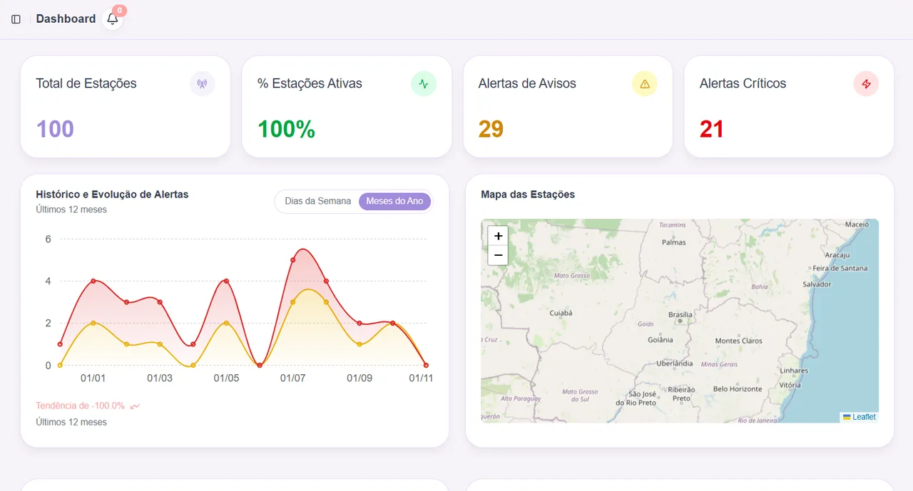

Telas reais do painel, da central de ajuda do próprio sistema
Sobre o projeto
Problema
A Tecsus queria entrar em monitoramento ambiental com uma solução completa e barata: estações que medem vento, chuva, umidade, temperatura e pressão, envio periódico dos dados, um portal com dashboards e alertas e um componente educacional que ensine a alunos do ensino médio a matemática dos parâmetros e a prevenção de desastres naturais.
Solução
Um ecossistema IoT em microsserviços. As estações publicam via MQTT, um coletor grava os dados brutos, o servidor NestJS processa as medições em filas, gera alertas em tempo real e relatórios, o painel web cuida de estações, parâmetros e alarmes e o portal educacional explica o projeto com cenas 3D. Tudo roda na AWS, provisionado com Terraform.
Minhas contribuições
- Base e layout do painelProjeto React Router com Docker, Husky e Commitlint, layout com barra lateral e cabeçalho e os componentes de interface.PR #7
- Parâmetros meteorológicosListagem com paginação e filtros e modais de criar e editar com seletor de ícone por unidade de medida.PR #8PR #9
- EstaçõesListagem, página de detalhes com abas e formulário de cadastro e edição de estações.PR #12
- DashboardCards de estatística, mapa das estações com Leaflet, histórico de alertas com Recharts, últimas leituras e alertas recentes.PR #49
- Resumo do dashboard de ponta a pontaCasos de uso e endpoints no NestJS para contar estações e alertas por nível, com testes unitários, e o consumo no painel com teste de componente.server #55PR #52
- Portal educacionalCriei e mantive o portal em Astro, a partir de um tema base, com seções em React, cenas 3D de Arduino e ESP32 com Three.js e o conteúdo didático.gaia-portal
- Guardião do padrão de códigoComo code owner do painel fiz 82 revisões, com 14 pedidos de mudança e 28 comentários sobre arquitetura, como separar view e hook e paginar por cursor.CODEOWNERS
- Medições e relatórioPágina de medições de cada estação e o relatório da sprint 2 com burndown e tarefas.PR #51
Habilidades desenvolvidas
Hard skills · nível ao fim da API
Soft skills
- Mentoria técnicaUsei as revisões para ensinar o padrão do projeto, explicando o motivo de cada pedido.
- Dono do que entregaAssumi sozinho o portal educacional, da criação do repositório à publicação.
- OrganizaçãoEscrevi o relatório da sprint 2 com burndown, tarefas e slides.
- AdaptabilidadeTroquei de stack outra vez, agora para React Router, NestJS e 3D na web.
Tecnologias utilizadas
O que levo desta API. Passei a revisar mais do que escrever. Como code owner, aprendi a dar feedback que ensina o padrão em vez de só apontar o erro.